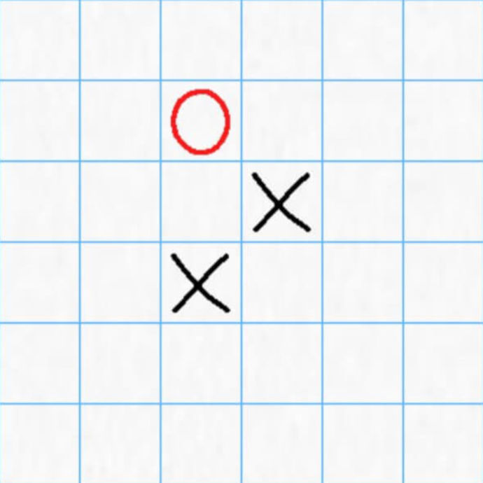
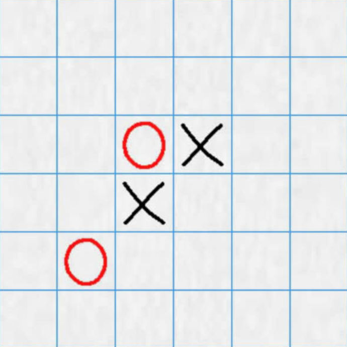
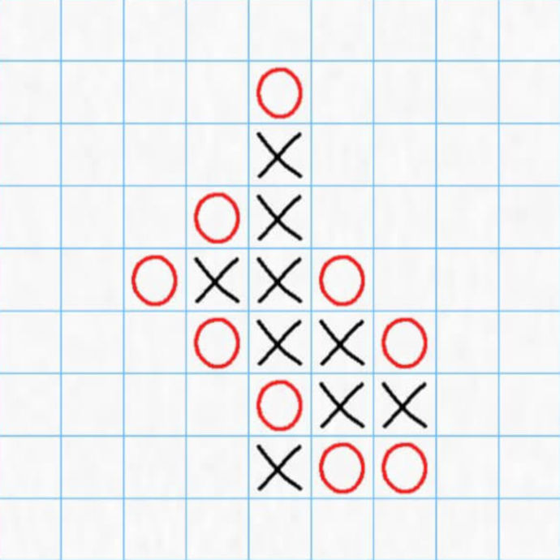
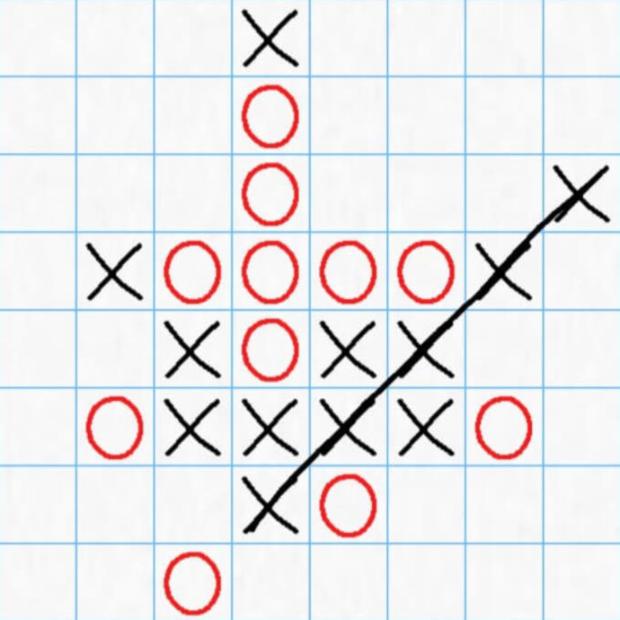

Hraje se na hrací ploše 10×10, tvořené poli ve tvaru čtverce.
Na začátku si hráči rozdělí role. Jeden bude hrát za kolečka
, druhý bude hrát za křížky
.
Losem se určí, kdo bude začínat. V naší aplikaci to vylosujeme za vás.
Hráči se střídají v tazích.
Hráč, který je na tahu, umístí jeden ze svých symbolů na prázdné pole
na hrací ploše. Tj. hráč hrající za křížky umístí křížek, hráč hrající
za kolečka umístí kolečko.
Křížky a kolečka se umisťují dovnitř políček na hrací ploše.
Hráč, který umístí pět svých symbolů do jedné řady, vyhrává.
Výherní kombinací se rozumí pět symbolů ve směru vodorovném, svislém
nebo šikmém. Mezi pěti symboly tvořícími výherní kombinaci nesmí být
žádné prázdné pole ani pole obsazené soupeřovým symbolem.
Pokud hráči zaplní celou desku, aniž by někdo umístil pět svých
symbolů do jedné řady, hra končí remízou.

Situace po třech tazích - na tahu je hráč s kolečky

Situace po čtyřech tazíchVýherní pozice hráče s kolečky

V této situaci nikdo nevyhrává. Pokud je na tahu hráč s kolečky,
může přidat další kolečko do šikmé řady, kde už má 4 kolečka, a
vyhraje.

Výherní pozice hráče s křížkyJeště jedna výherní pozice hráče s kolečky
 , druhý bude hrát za křížky
.
, druhý bude hrát za křížky
.